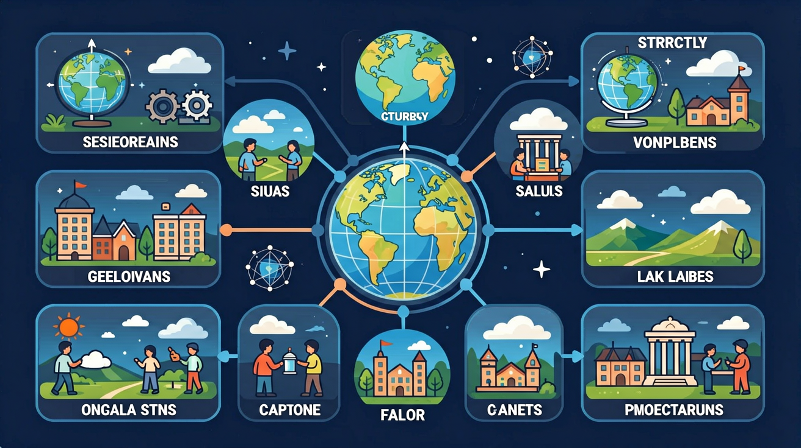

运用地球仪或软件，演示地球的自转运动，说出地球的自转方向、周期。
❓ 为什么经线是半圆而纬线是整圆？
❓ 怎么用经纬度快速定位一个地方？
❓ 南极和北极的经纬度是多少？
学完这一课，这些问题你都能自信地回答。
🎯 能说出经纬线的基本特点及划分依据
🎯 能判断给定地点的经纬度坐标范围
🎯 能分析经纬网在航海定位中的实际应用
下列哪条线长度最长？
东经120°位于
经纬网与地球坐标是初中地理的重要内容。运用地球仪或软件，演示地球的自转运动，说出地球的自转方向、周期。
运用模型或软件，演示地球的公转和运动，说出地球的公转方向、周期。
经线指示南北，纬线指示东西；经度、纬度构成地球坐标。赤道是最长的纬线，本初子午线是 0° 经线。经纬网可确定任意地点位置，并判断大致方向与半球。
拖动缩放地图，点击城市标记查看气候或区域说明；可开河流图层对照。
1. 误判自转方向：部分学生会错误认为"从北极俯视地球逆时针旋转是自西向东"。这个误解源于将地球仪演示与平面地图视角混淆。实际上，地球自转方向固定为自西向东，从北极俯视呈逆时针，南极俯视则相反。例如在分析台风旋转方向时，必须明确观测视角是哪个极点。
2. 经度数值混用：常有学生将西经20°写作"20°W"的同时，又将东经160°错误标记为"160°E"。这种错误源于对东西经180°互补关系理解不深。正确认知是：经度数值从本初子午线向东向西各180°，两者在180°经线重合。比如定位太平洋船只时，必须严格区分"165°E"与"165°W"。
3. 昼夜更替归因错误：近四成学生认为"昼夜变化是因地球公转产生"。这种错误源自将自转周期(24小时)与公转周期(365天)混淆。真实机制是：自转使得某地周期性进入晨昏线两侧。例如计算纽约日出时间，必须基于其经度位置和自转速度(约15°/小时)。
复制提示词到 AI 学伴，生成「经纬网与地球坐标」的示意图或结构提纲；也可以上传你手绘的示意图，请 AI 学伴点评。
复制后可粘贴到 AI 学伴继续对话。
读点：写清东/西经、南/北纬。比较两地时先看纬度定南北，再看经度定东西。
常见误区：常见误区是经纬线方向记反，或东西半球划分按 0°/180° 与 20°W/160°E 混淆。
纬线指示的方向是？
1. 民航航线规划：波音787执飞的上海-纽约航线实际航程约11800公里，但在地图上看似"绕远"。这是应用了球面几何原理——大圆航线最短。导航系统会计算起降点坐标(如PVG:31.14°N,121.81°E；JFK:40.64°N,73.78°W)，通过经纬网确定最优路径。
2. 北斗卫星定位：第三代北斗系统55颗卫星组成的星座，依赖精确的轨道面经度划分。每颗MEO卫星轨道高度21500公里，轨道面间隔60°经度。手机接收信号时，至少需要4颗卫星的经纬坐标进行三维定位，误差可控制在1米内。
3. 极地科考导航：中国南极中山站(69.37°S,76.38°E)周边冰盖移动监测中，科考队员需每日校正坐标。由于所有经线在南极点交汇，传统方位导航失效，必须依赖UTM(通用横轴墨卡托)网格坐标系，配合GPS经纬度数据确保安全。
1. 问题：为何国际日期变更线不完全沿180°经线？思考线索：观察地图可见变更线在俄罗斯远东和美国阿拉斯加附近出现"Z"字形曲折。从政治地理角度，这避免了同一行政区出现两个日期；再结合地球自转速度，分析白令海峡渔船作业时如何规避日期混乱。
2. 问题：地球自转速度如何影响卫星发射？思考路径：比较法属圭亚那库鲁航天中心(5.2°N)与拜科努尔航天发射场(45.6°N)的选址差异。计算赤道地区自转线速度(约1670km/h)带来的初速度增益，再结合我国文昌发射场(19.6°N)的经纬度优势。
先从一个具体场景切入：当MH370航班失联时，搜救队首先确认最后已知位置为6°55′15″N,103°34′43″E。这个坐标背后是整套地球坐标系统的应用——经线连接南北极确定东西位置，纬线平行排列标记南北方位。接着探究系统原理：地球自转轴确立两极，由此衍生出本初子午线(经过格林尼治天文台旧址)和赤道这两个基准圈。在演示地球自转时，用激光笔照射旋转中的地球仪，可见晨昏线以15°/小时的速度移动，这正是全球24时区划分的基础。然后解决实际问题：货轮"长赐号"在苏伊士运河搁浅时(30.01°N,32.58°E)，救援队需要换算成运河航道坐标系。最后拓展认知边界：GPS定位本质上是通过测量与至少四颗卫星的时差，解算三维坐标(经度、纬度、高度)，这其中地球扁率导致的经纬线曲率修正量可达0.2%。从古代航海家的六分仪到现代手机的定位芯片，人类始终在与这个覆盖地球的隐形网格对话。
关于经线说法正确的是
比较南极地区与赤道地区的经纬网特征差异
先独立作答，再点选项查看对错与错因。
救援队从上海（31°N,121°E）出发，正确的行进方向是
两艘船的位置关系正确的是
电子海图上两船连线与纬线的夹角约为
若遇险船向正北航行100公里，其纬度将增加约____度
答案：0.9
每纬度约111公里，100÷111≈0.9
与遇险船经度相同且位于南半球的对称点坐标是____
答案：30°S,122°E
纬度对称变化，经度保持不变
（中考真题）渔船在（30°N，120°E）遇险，救援船应往哪个方向搜索？
（迁移题）若将教室视为地球仪，讲台代表北极点，则：
（概念题）关于经纬网说法正确的是
✅ 纬度范围是0°-90°（南北纬）
💡 与经度范围混淆
✅ 西经20°-东经160°才是分界
💡 混淆地理分界与坐标起点
口诀：横纬竖经像棋盘，东经西经分两边
类比：像用电影院座位号找位置，排号是纬度，座号是经度
复述本课两个核心概念的定义。
用本课方法分析一个新例子。
有同学认为：认为纬度从0°到180° —— 请说明错在哪里。
有同学认为：认为本初子午线是东西半球分界线 —— 请说明错在哪里。
把还没弄明白的地方写下来问 AI 学伴。它会先帮你找到卡住的地方，再给你一个小小的提示，让你自己往前走一步。